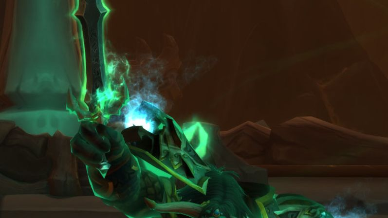

Accueil › Classes
Classes de WoW Forever
Les neuf classes de Classic sont là, rééquilibrées tout en gardant leur identité. Aucune nouvelle classe à la sortie, mais six nouvelles combinaisons race/classe et la race Skyborne.

Guerrier
Tank ou dégâts au corps à corps.
Paladin
Soin, tank ou dégâts.
★ Désormais jouable côté Horde
Chasseur
Dégâts à distance avec un familier.
Voleur
Furtivité et dégâts rapides.
Prêtre
Soins puissants ou ombre.
Chaman
Totems, soin ou dégâts.
★ Désormais jouable côté Alliance
Mage
Dégâts de sorts à distance.
★ Jouable en Skyborne (Alliance)
Démoniste
Démons et dégâts sur la durée.
Druide
Hybride : tank, soin ou dégâts.
Nouvelles combinaisons à retenir

HordePaladins Horde
Pour la première fois dans une version Vanilla, la Horde a accès au paladin.
Alliance
Chamans Alliance
Le chaman rejoint l'Alliance, comme à l'époque de Burning Crusade.
Skyborne
Skyborne des deux factions
Disponibles côté Alliance comme Horde : mage uniquement côté Alliance, chaman uniquement côté Horde.